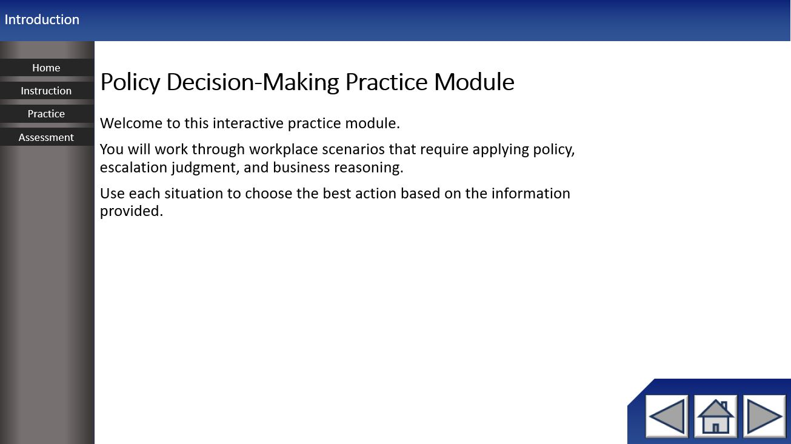
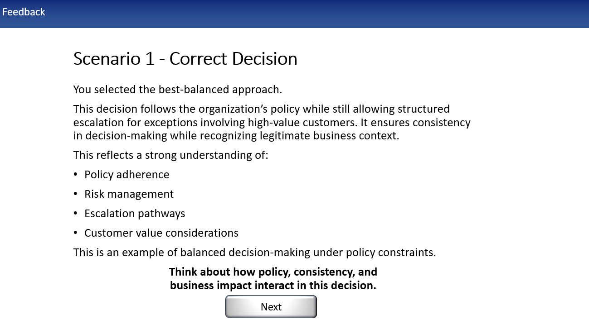

This was a mock up for an eLearning module to train users on decision making within the company policies.


Independently developed a mock eLearning module designed to train employees on decision-making within company policies. Applied a backward design approach — establishing learning goals and assessment items before developing lesson content — resulting in a cohesive, assessment-aligned course. Includes a downloadable interactive PDF as a companion job aid. Built entirely in PowerPoint, demonstrating the ability to create effective training without specialized eLearning tools.
Click here to download the sample eLearning Module.
Planned eLearning Module flow → designed assets → QA/testing → deployed.